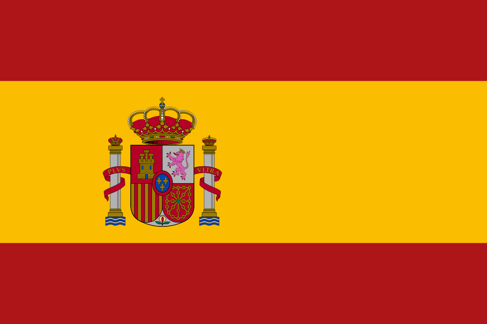
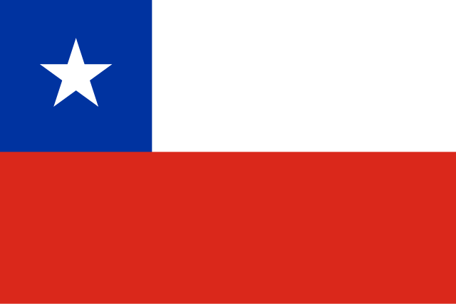

Pretty Little Liars
Pretty Little Liars (bra: Maldosas; prt: Pequenas Mentirosas) é uma série de televisão norte-americana baseada na popular série literária de mesmo nome escrita por Sara Shepard. A série segue a vida de cinco melhores amigas cuja amizade se desfez após o desaparecimento da sua líder Alison. Um ano depois, as amigas afastadas Spencer, Hanna, Aria e Emily reencontram-se e começam a receber mensagens de uma figura misteriosa chamada "A", que ameaça expor os seus segredos mais profundos. A série apresenta um grande elenco protagonista, liderado por Troian Bellisario como Spencer Hastings, Lucy Hale como Aria Montgomery, Ashley Benson como Hanna Marin, Shay Mitchell como Emily Fields, Sasha Pieterse como Alison DiLaurentis e Janel Parrish como Mona Vanderwaal.
Ganhou por 5 vezes consecutivas o Prêmio Teen Choice de Melhor Série de TV – Drama. Estreou a 8 de junho de 2010 no canal Freeform. Após um pedido inicial de 10 episódios, a ABC Family encomendou 12 episódios adicionais em 28 de junho de 2010. O sucesso de audiência dos primeiros 10 episódios levou a série literária a estender-se além dos oito livros iniciais. Desde a sua estreia, a série recebeu críticas mistas dos críticos de televisão, mas manteve-se um sucesso relativo para a Freeform, conquistando um grande fandom. A 29 de agosto de 2016, foi oficialmente anunciado o término da série após o fim da sétima temporada. As filmagens da série foram finalizadas a 26 de outubro de 2016.
O último episódio da série foi exibido no dia 27 de junho de 2017, transmitido pela emissora Freeform. O final da série foi visto por cerca de 1,41 milhão de telespectadores. Teve a segunda maior classificação de qualquer série de TV por cabo que foi para o ar naquela noite, mas recebeu uma recepção morna, tanto da crítica quanto do público. No dia 21 de dezembro de 2020, a série saiu do catálogo do serviço de streaming, Netflix. A saída da série está relacionada com a chegada do serviço de streaming da Warner Bros. TV, o HBO Max, cujo lançamento ocorreu a 29 de junho de 2021.
É a primeira série da franquia Pretty Little Liars, com ela tendo dois spin-offs: Ravenswood e Pretty Little Liars: The Perfectionists, ambos cancelados após uma temporada. Em setembro de 2020, o HBO Max deu um pedido de série intitulado Pretty Little Liars: Original Sin, outro spin-off que se concentrará num novo elenco de personagens num cenário diferente.
Atores e personagens
- Sasha Pieterse como Alison e Courtney DiLaurentis Hastings
- Lucy Hale como Aria Montgomery
- Shay Mitchell como Emily Fields
- Ashley Benson como Hanna Marin
- Janel Parrish como Mona Vanderwaal
- Troian Bellisario como Spencer e Alex Hastings Drake
- Ian Harding como Ezra Fitzgerald marido de Aria na série
- Brant Daugherty como Noel Kahn marido de Aria nos livros
- Tyler Blackburn como Caleb Rivers marido de Hanna na série
- Cody Christian como Mike Montgomery marido de Hanna nos livros
- Keegan Allen como Toby Cavanaugh
- Julian Morris como Wren Kim marido de Spencer nos livros
Antecendentes e produção
Desenvolvido como uma série de televisão pela empresa Alloy Entertainment, a ideia foi apresentada como "Desperate Housewives para adolescentes". Alloy se reuniu com a autora da série de livros Sara Shepard. A Warner Horizon e a Alloy estavam interessados em produzir a série de televisão há anos, que foi planejada para a The WB em 2005 com um escritor diferente, até que a rede de televisão foi encerrada no início de 2006 e restabelecida como The CW no final do mesmo ano. O primeiro livro da série foi publicado pela HarperTeen em outubro de 2005. Em junho de 2008, Alloy notou que estava desenvolvendo um piloto da mesma série de televisão para a ABC Family, com os livros adaptados para a televisão. Após o piloto filmado em Vancouver, a série se mudou para Los Angeles.
Música
A música-tema escolhida para Pretty Little Liars foi "Secret", da banda The Pierces, que foi sugerida pela estrela da série, Ashley Benson. O episódio piloto fez uso de músicas de artistas como The Fray, Ben's Brother, MoZella, Orelia e Colbie Caillat. A série também contou com músicas da banda Passion Pit, Pink, Florence and the Machine, Selena Gomez & the Scene, OneRepublic e McFly. Em 14 de junho de 2011, "Jar of Hearts", de Christina Perri foi destaque no primeiro episódio da segunda temporada. A música "Follow Suit" de Trent Dabbs também tem sido destaque na série. No episódio "The Perfect Storm", Aria (Lucy Hale) canta um cover da música "Who Knows Where the Time Goes?" da banda inglesa Fairport Convention. A trilha sonora oficial foi lançado em 15 de fevereiro de 2011.
Exibição Internacional
A série chegou a ser exibida pelo Boomerang (2011–2013), onde este costumava ser o canal oficial da série no Brasil.
A mudança ocorreu devido a um novo tipo de programação adotada pela emissora. Depois disso, em 2014, a série passou a ser exibida pelo canal Glitz*; que também passou pela mesma mudança do Boomerang. Em 2015, a série passou a ser exibida pelo canal de televisão paga, TNT Séries, a partir de 2015, que reprisou a quarta temporada antes da estrear a quinta temporada, e no ano seguinte a retirando de sua programação. As duas primeiras temporadas foram brevemente exibidas em televisão aberta pelo SBT, entre 2 de dezembro de 2013 até 21 de abril de 2014, mas apenas com a primeira temporada exibida completa.
| País | Emissora | Estreia | Notas |
|---|---|---|---|
 Estados Unidos
Estados Unidos
|
Freeform |
8 de junho de 2010 |
Emissora de origem |
| Filipinas | ETC |
22 de novembro de 2010 |
Temporada 1 - presente |
|  Espanha | MTV Espanha |
17 de janeiro de 2011 |
Temporada 1 - presente |
 Austrália
Austrália
|
Fox8 |
17 de janeiro de 2011 |
Temporada 1 - presente |
 França
França
|
OSC Max |
23 de janeiro de 2011 |
Temporada 1 - presente |
| Croácia | Doma TV |
03 de fevereiro de 2011 |
Temporada 1 - presente |
 Reino Unido
Reino Unido
Irlanda |
MTV |
24 de março de 2011 |
Temporada 1 - 5 |
 Argentina
Argentina
 Brasil
Brasil
 Chile  Colômbia
Colômbia
Costa Rica  Equador
Equador
 México
México
Peru |
Boomerang
Glitz* TNT Séries HBO Max |
30 de março de 2011
02 de outubro de 2012 07 de maio de 2015 |
Temporada 1 - 5
Temporada 2 - 4 Temporada 4 - 5 Temporada 6 - 7 |
| Portugal |
AXN White
Biggs |
28 de abril de 2011
05 de julho de 2023 |
Temporada 1 - presente |
Adaptações internacionais
| País | Título | Emissora | Data de lançamento |
|---|---|---|---|
| Índia | Best Friends Forever? | Channel V Incia | 3 de dezembro de 2012 — 25 de maio de 2013 |
| Turquia | Tatlı Küçük Yalancılar | Star TV | 6 de julho de 2015 — 3 de outubro de 2015 |
 Indonésia
Indonésia
|
Best Friends Forever | Trans TV | 7 de agosto – 27 de agosto de 2017 |
| Pretty Little Liars | Viu | 22 de abril de 2020 – presente |